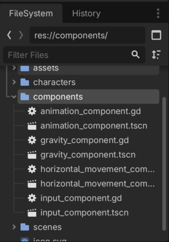
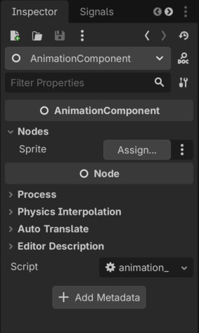
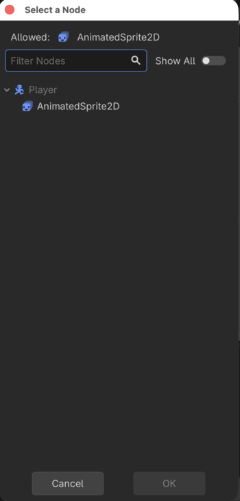
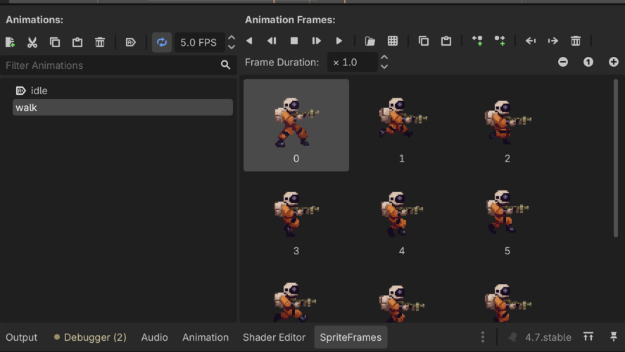
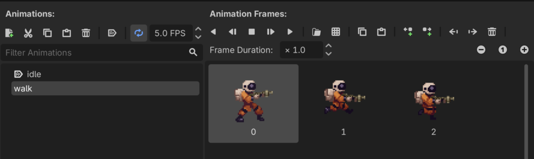

Godot 2D Platformer - level 7 animationer
I level 6 fik vi vores Player
til at bevæge sig ved at lave to komponenter, en
HorizontalMovementComponent og en
InputComponent.
Men! Der er ikke meget sjov ved den måde vores spiller bevæger sig på. Den vender altid på den samme måde og den animerer ikke.
Lad os rette op på det ved at lave en AnimationComponent
i denne level. Let's go!
Lad os - som altid - lige tænke os om først
Hvad er det vi gerne vil? Ja vi vil jo gerne have en komponent der i første omgang kan afgøre om der skal spilles en "walk" eller en "idle" animation (senere skal den også håndtere at vi hopper, skyder og dør men det tar' vi senere).
Hvad kan vi bruge til at afgøre om det skal være "walk" eller "idle" vi spiller?
Det er vel om der er trykket på en "bevæg dig" tast eller ej.
Men hey! Det lavede vi jo i vores InputComponent
input_component.horizontal_direction giver os et tal som
er -1, 0 eller 1. Det kan vi da bruge.
Hvis horizontal_direction == 0 så spil "idle"
animationen, ellers så spil "walk" animationen.
Nemt :)
AnimationCompoent - Skelet
Vi skal igeenem samme show som da vi lavede de andre komponenter.
- Lav en ny Node2D
- Kald den "AnimationComponent"
- Gem dem som
animation_component.tscnunder "components" - Tilføj et script til "AnimationComponent"
Det ser sådan her ud:

Script
Scriptet kan vi også starte på, det skal have en
class_name som de andre
class_name AnimationComponent
extends NodeOg hvad så? Hvad er det vi skal animere? Det er en
AnimatedSprite2D så hvis vi nu sørger for at sætte den som
en '@export sprite: AnimatedSprite2D' når vi bruger vores
AnimationComponent så er det nemt.
Så vi tilføjer:
@export_subgroup("Nodes")
@export var sprite: AnimatedSprite2Dtil vores script så det ser sådan her ud:
class_name AnimationComponent
extends Node
@export_subgroup("Nodes")
@export var sprite: AnimatedSprite2DOg så kan vi skrive vores funktion.
Vi blev enige om at den skulle have en
horizontal_direction med ind som parameter og den skal ikke
returnere nogen værdi.
Vi laver en liste så vi kan strege ud undervejs:
Funktionens signatur
Når vi skriver sådan en funktion kalder vi "den måde funktionen ser ud på" for dens signatur.
Så i det her tilfælde vil vi have en funktion som:
- hedder
handle_move_animation - tager en
horizontal_directionaf typenfloatsom input parameter - ikke returnerer noget
Så det skriver vi:
func handle_move_animation(horizontal_direction: float) -> void:
Det var skridt 1
Hvilken animation skal vi spille?
Hvad var det vi aftalte ovenfor?
Hvis
horizontal_direction == 0så spil "idle" animationen, ellers så spil "walk" animationen.
OK, nemt:
if horizontal_direction == 0:
sprite.play("idle")
else:
sprite.play("walk")Det var skridt 2
Her er hele vores script
class_name AnimationComponent
extends Node
@export_subgroup("Nodes")
@export var sprite: AnimatedSprite2D
func handle_move_animation(direction: float) -> void:
if horizontal_direction == 0:
sprite.play("idle")
else:
sprite.play("walk")Men...
Nu har vi sagt at der skal være en animation der hedder
"idle" og en der hedder "walk" på de scenes vi vil bruge sammen med
vores AnimationComponent.
Men det er vel også OK, hvis vi sørger for at bruge de navne kan vi
tilgæld nemt styre alle animationer ved at tilføje en
AnimationComponent og binde den op med den rigtige
AnimatedSprite2D og så skal vi ikke tænke på mere...det er
da nemt.
Tilføj
AnimationCompoent til Player
Vi skal igennem det samme show som da vi tilføjede
GravityComponent, HorizontalMovementComponent
og InputComponent. Du kan sikkert huske det men for en god
ordens skyld:
Præcis på samme måde som vi tilføjede GravityComponent
tilføjer vi nu HorizontalMovementComponent til vores
Player ved at:
- Tilføje en
@export var animation_component: AnimationComponenttil voresPlayerscript - "Instantiate Child scene" og tilføje
animation_component.tscnpå voresPlayer - Assigne
AnimationComponenttil "Animation Component" i "Inspectoren" for vores "Player"
Og! Som noget nyt skal vi have bundet vores Players
AnimatedSprite2D fast til sprite variablen på
vores AnimationComponent. Det gør vi sådan her:
- I venstre side af skærmen, under
Playerklikker vi på denAnimationComponentsom vi lige tilføjede. - I "Inspectoren" i højre side kan vi se at der under "Aninamtion Component" er en "Nodes" gruppe, og i den er der en "Sprite" værdi som vi kan trykke "Assign" ud for
Det ser sådan her ud

- Tryk på "Assign" og vælg
AnimatedSprite2Dunder voresPlayernode

Så mangler vi lige en vigtig detalje
Nemlig en "walk" animation.
Den laver du præcis som du lavede din "idle" animation. Under assets kan du finde et sprite sheet der hedder "space-marine-walk.png" som du kan trække ind i dit projekt og bruge.
Det ser sådan her ud:

Kør din animation.
Hmmm...den ser lidt sjov ud hvis du looper animationen, som om der er en frame der ikke skal være der.
Fjern den første frame ved at klikke på den, og så på skraldespanden i øverste højre hjørne

Kør så animationen igen. Bedre!
Brug
AnimationComponent i vores Player script
Så er vi klar til den sjove del, nemlig at bruge vores
AnimationComponent sammen med vores
Player.
Vi kunne godt smide vores kode sammen med de andre i
_physics_process men...at styre en animation har vel
egentlig ikke noget med fysik motoren at gøre har det?
Nej så lad os i stedet bruge den almindelige _process
funktion som vi også brugte i vores 2D space shooter.
Vi tilføjer
func _process(delta: float) -> void:Og hvad gør vi så? Ja vi har jo vores
animation_component og på den har vi vores
handle_move_animation funktion som vi kan kalde med den
aktuelle horizontal_direction som vi kan få fra vores
input_component.
Det ser sådan her ud:
func _process(delta: float) -> void:
animation_component.handle_move_animation(input_component.horizontal_direction)Kør dit spil.
Jaeh ja! Vores AnimatedSprite2D spiller "idle"
animationen når vi står stille og "walk" når vi bevæger os.
Meeen...når vi bevæger os mod venstre vender vores
AnimatedSprite2D sig ikke om, men moonwalker i stedet og
ja, det er ser da også meget fedt ud men vi er kræsne så vi vil hellere
have at figuren vender sig rigtigt.
Vend dig om!
Det er heldigvis en nem opgave i Godot.
Vi kigger i dokumentation
og ser at på AnimatedSprite2D finder vi en property der
hedder flip_h
Der står:
If true, texture is flipped horizontally.
Det betyder at vi kan sige til vores AnimatedSprite2D at
den skal vende animationen spejlvendt hvis
flip_h = true.
Så nu skal vi bare finde ud af hvad der kan afgøre at vi skal sætte
flip_h til at være true.
Igen har vi vores horizontal_direction.
Hvis den er -1 går vi mod venstre og så vil vi gerne sætte
flip_h = true.
Lad os rette det i vores AnimationComponent.
Tilføjelse til
vores AnimationComponent script
Hop ind i animation_component scriptet.
Det her kan gøres på mange måder men lad os lave en ny funktion som
er lidt defensiv og så kan vi kalde den fra vores
handle_move_animation.
Så vi laver en ny funktion med følgende signatur:
func handle_horizontal_flip(horizontal_direction: float) -> void:
Og hvad vil vi så? Altså
- Hvis
horizontal_direction == 0vil vi ikke gøre noget. - Hvis
horizontal_direction < 0vil vi sigeflip_direction = true - Hvis
horizontal_direction > 0vil vi sigeflip_direction = false
Det ser sådan her ud:
func handle_horizontal_flip(horizontal_direction: float) -> void:
# hvis horizontal_direction == 0 vil vi ikke gøre noget
if horizontal_direction == 0:
# return betyder...stop her
return
# Hvis `horizontal_direction < 0`
if horizontal_direction < 0:
# vil vi sige `flip_direction = true
sprite.flip_h = true
# Hvis `horizontal_direction > 0
else:
# vil vi sige `flip_direction = false`
sprite.flip_h = falseSå mangler vi bare at kalde vores funktion fra
handle_move_animation
func handle_move_animation(horizontal_direction: float) -> void:
handle_horizontal_flip(horizontal_direction)
if horizontal_direction == 0:
sprite.play("idle")
else:
sprite.play("walk")Her er hele vores script:
class_name AnimationComponent
extends Node
@export_subgroup("Nodes")
@export var sprite: AnimatedSprite2D
func handle_horizontal_flip(horizontal_direction: float) -> void:
if horizontal_direction == 0:
return
if horizontal_direction < 0:
sprite.flip_h = true
else:
sprite.flip_h = false
func handle_move_animation(horizontal_direction: float) -> void:
handle_horizontal_flip(horizontal_direction)
if horizontal_direction == 0:
sprite.play("idle")
else:
sprite.play("walk")Kør dit spil igen og nyd hvordan vores spiller nu vender sig rigtigt når vi skifter retning.
Godt arbejde!
Det kan godt være at du stadig tænker
Hvorfor pokker skal vi lave alle de komponenter, er det ikke bare en masse arbejde?
Men prøv at tænk på hvor nemt det bliver når vi skal til at lave
vores Walker. Hvis vi bare sørger for at lave en "walk" og
en "idle" animation behøver vi - næsten - ikke gøre mere for at få
animationer foræret, det er da fedt!
Men...vi glæder os over det forkerte, lad os være glade for at vi nu
har en AnimationComponent og at vores Player
begynder at komme til live.
I næste level vil vi forsøge at få vores
Player til at kunne hoppe også, så når du er klar kan du
hoppe videre...vi ses!